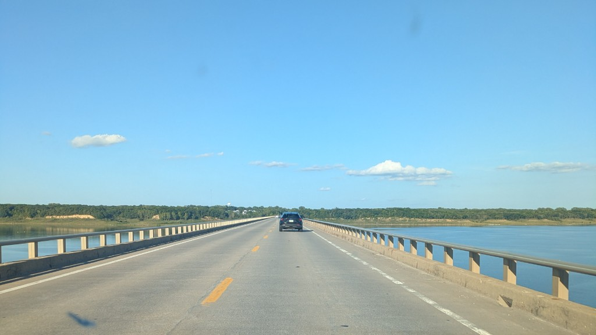

Earlier product slices start from generated canonicals. This slice tests the same pipeline when A is a real photograph: a first-person still on a long causeway over water, a car ahead, rails, and a clear vanishing point. The still is filmmaker-supplied and authoritative. It is not a generated destination.
The product path is the existing storyboard drop / replace. A photographic opening frame is a first-class canonical. Camotion then has to condition real geometry — measured depth, a hard horizon, painted road marks, and a subject that already occupies the far center — instead of a still the image model invented.
Photographic A is a first-class Camotion input.
The opening still has real depth, a strong vanishing point, nearby pavement and rails, distant water and treeline, and a car already sitting in the protected far field. Adaptive Camotion (pace × depth × destination protection × VP protection) is exactly the operator this geometry asks for. This slice does not retune Phase 1. It asks whether that frozen operator still reads when A was photographed rather than generated.

A — Photographer still. First-person on the causeway. The car, rails, and horizon are in the photograph, not constructed.
What this tests
REAL PHOTO → CAMOTION
Generated A can accidentally cooperate with Camotion: the image model already drew a clean tunnel, a doorway, or a forest mouth. A photograph does not. This still is a flat roadway receding to a point, with a vehicle already on that point. If Camotion over-protects the center, the car never approaches. If it over-exposes the far field, the car and horizon smear. If it ignores nearby pavement, the shot loses the sense of forward travel.
The filmmaker does not have to reconstruct A. Drop or replace the storyboard opening with the photograph. Later destinations may still be constructed. A stays the photographed world-state.
The take
~15s FORWARD TRAVEL
The movie is about fifteen seconds of continuous first-person travel along the same causeway. The car remains ahead. Weather is the world change: clear sky, then a building cloud, then a storm cell, lightning, and a wet road. The geometry of the bridge stays the route. This is not a claim about a specific Director beat list or a destination-aware field. It is evidence that the current pipeline can leave a real photograph and keep shooting forward while the world around that photograph changes.
Do not treat this as a new Camotion operator.
Camotion Phase 1 stays frozen. Destination-aware / non-radial VP→D fields remain backlog. Slice 8 remains the current product overview. This chapter is a photographic-A evidence spike: same directing loop, same adaptive weights, a real still at A.